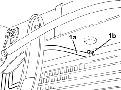
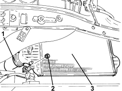

1048B50 INTERCOOLER - R + R
- Path
- Procedures > 10 ENGINE > 1048 ENGINE AIR SUPPLY CIRCUIT > 1048B PRESSURE AIR CIRCUIT > 1048B50 INTERCOOLER - R + R
- Kind
- repair procedure (removal / refitting; the operation number is the code)
- Applies to
- engines: 2.4 JTD 20v; all production periods
- Interactive page
- https://sloeber94.github.io/elrnDB-aBrrSpdr/en/#/946003994
Applies to: engines: 2.4 JTD 20v; all production periods
 Removing
Removing
 Refitting
RefittingOp. 0010T84 COOLANT FOR AIR CONDITIONING SYSTEM - DEHYDRATE AND REPRESSURIZE
Op. 7055B54 UNDER ENGINE PROTECTION/GUARD - R.R.
Op. 1048A28 VACUUM AIR CIRCUIT RESONATOR PIPE - R+R
Op. 1048A10 AIR FILTER ASSEMBLY - R.R.
Op. 1048A23 COLD AIR INTAKE FOR AIR FILTER - R.R
Op. 5040A40 AIR CONDITIONING CONDENSER - R+R
1. Release the power assisted steering system fluid heat exchanger pipe (1a) from the band (1b).

Applies to: engines: 2.4 JTD 20v; all production periods
1. Loosen the band and disconnect the air supply hose from the heat exchanger to the rigid pipe, heat exchanger side.
2. Undo the nut fixing the supercharging air/air heat exchanger to the engine cooling radiator.

Applies to: engines: 2.4 JTD 20v; all production periods
1. Loosen the band and disconnect the air supply hose between the turbocharger and the heat exchanger, heat exchanger side.
2. Undo the nut fixing the supercharging air/air heat exchanger to the engine cooling radiator.
3. Remove the supercharging air/air heat exchanger releasing it from the engine cooling radiator.

Applies to: engines: 2.4 JTD 20v; all production periods
Refitting
Removing- Place the supercharging air/air heat exchanger in its housing, secure it to the fins on the engine cooling radiator and tighten the nuts.
- Connect the air supply hose between the turbocharger and the heat exchanger, heat exchanger side, and tighten the band.
- Connect the air supply hose from the heat exchanger to the rigid pipe, heat exchanger side and tighten the band.
- Fasten the power asissted steering system fluid heat exchanger pipe using the band.
Op. 5040A40 AIR CONDITIONING CONDENSER - R+R
Op. 1048A23 COLD AIR INTAKE FOR AIR FILTER - R.R
Op. 1048A10 AIR FILTER ASSEMBLY - R.R.
Op. 1048A28 VACUUM AIR CIRCUIT RESONATOR PIPE - R+R
Op. 7055B54 UNDER ENGINE PROTECTION/GUARD - R.R.
Op. 0010T84 COOLANT FOR AIR CONDITIONING SYSTEM - DEHYDRATE AND REPRESSURIZE
Topics linked from this page (7)
- 0010T84 COOLANT FOR AIR CONDITIONING SYSTEM - DEHYDRATE AND REPRESSURIZE
- 1048A10 AIR FILTER ASSEMBLY - R.R.
- 1048A23 COLD AIR INTAKE FOR AIR FILTER - R.R
- 1048A28 VACUUM AIR CIRCUIT RESONATOR PIPE - R+R
- 5040A40 AIR CONDITIONING CONDENSER - R+R
- 7055B54 UNDER ENGINE PROTECTION/GUARD - R.R.
- 7210E10 R.R. FRONT BUMPER